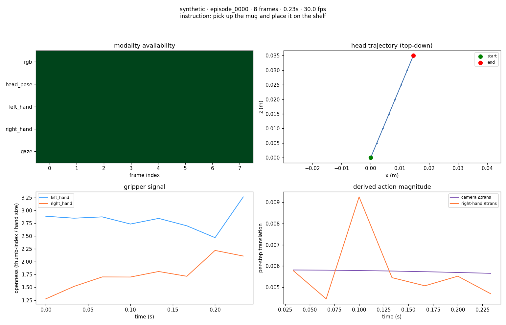
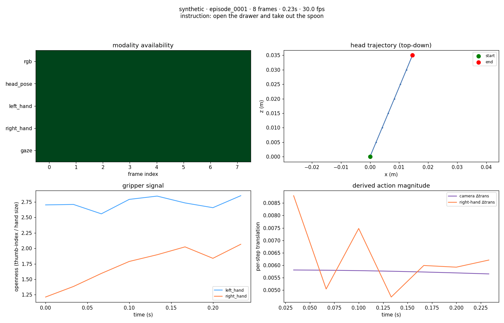

TASK: pick up the mug and place it on the shelf
| start (s) | end (s) | narration |
|---|---|---|
| 0.00 | 0.03 | approach object |
| 0.07 | 0.07 | reach and align |
| 0.10 | 0.13 | grasp |
| 0.17 | 0.17 | manipulate |
| 0.20 | 0.23 | retract hand |

TASK: open the drawer and take out the spoon
| start (s) | end (s) | narration |
|---|---|---|
| 0.00 | 0.03 | approach object |
| 0.07 | 0.07 | reach and align |
| 0.10 | 0.13 | grasp |
| 0.17 | 0.17 | manipulate |
| 0.20 | 0.23 | retract hand |
